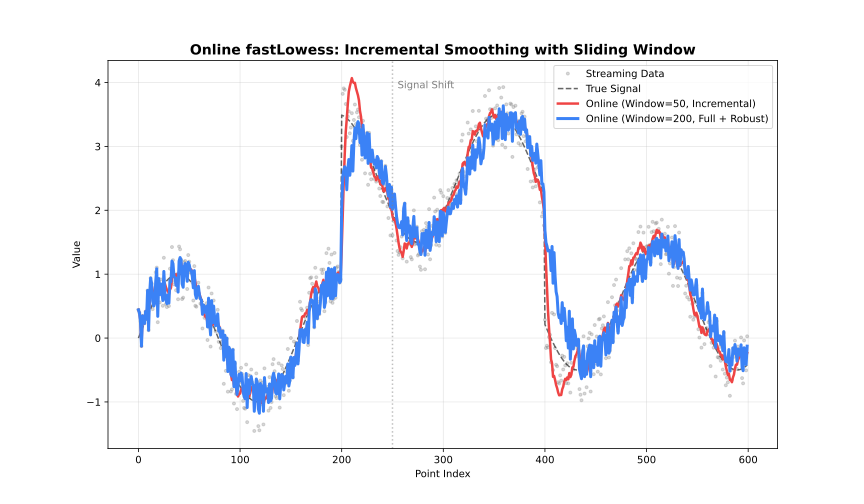

See also: Choosing an Execution Mode for a comparison of all three modes.
Maintains a sliding window and processes each incoming point immediately.

Online adapter comparison
When to Use
- Real-time data streams (sensors, logs)
- Each point must be smoothed as it arrives
- Memory-bounded processing with a fixed window
Parameters
| Parameter | Default | Description |
|---|---|---|
window_capacity |
1000 | Max points in sliding window |
min_points |
2 | Minimum points before output |
update_mode |
"incremental" |
"incremental" or "full" refit |
Example
library(rfastlowess)
set.seed(42)
times <- 1:100
temperatures <- 20 + 5 * sin(times / 10) + rnorm(100)
model <- OnlineLowess(
fraction = 0.3,
window_capacity = 25,
min_points = 5,
update_mode = "incremental"
)
for (i in seq_along(times)) {
result <- add_point(model, times[i], temperatures[i])
if (!is.null(result))
cat(sprintf("Time %d: %.2f\n", times[i], result$y))
}Note:
update_mode = "incremental"refits only the most recent point for lower latency.update_mode = "full"refits the entire window for higher accuracy.